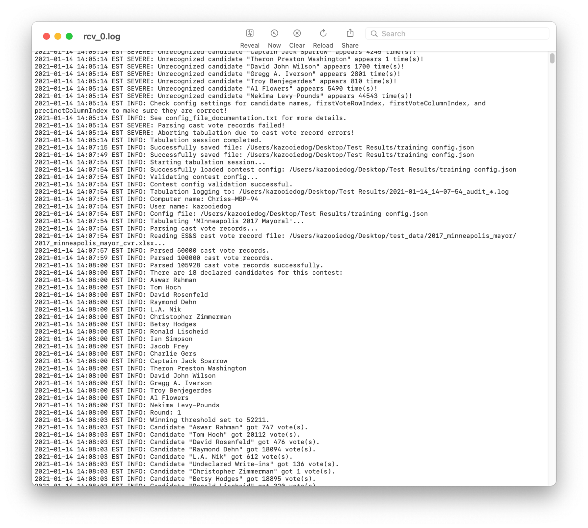
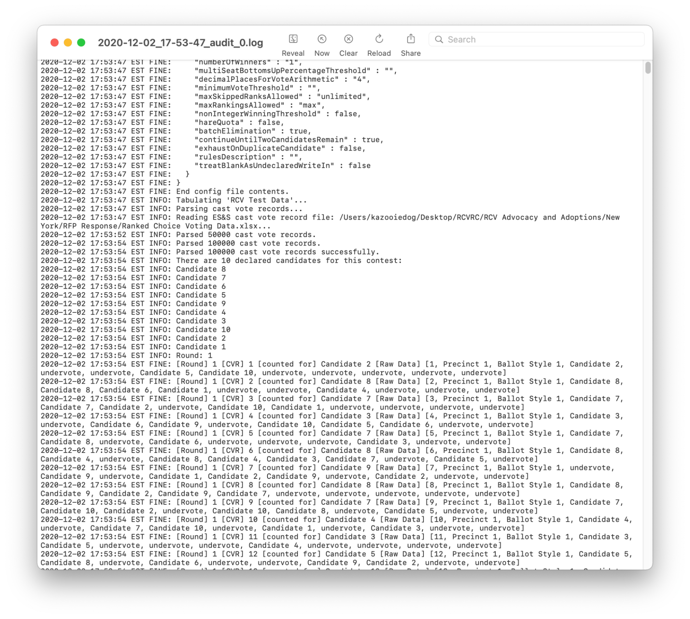

Section 28 - Post-Election Audit & Clearing RCTab from System¶
Post-Election Audit Preparation for RCTab¶
In order to run a post-election audit of RCTab, users will need to gather up all relevant log files and understand the information included in those logs. This guide will describe where to find the relevant log files and how to read those log files in any audit procedure.
Retrieving the Operator log(s)¶
The operator log is a .log file that includes all information from the black log box at the bottom of the user interface, as shown at the bottom of the screenshot here:
The operator log is updated any time RCTab generates any message to send through that log box. Note that messages are generated internally by the software, then saved to the operator log file and shown to the user in the log box.
On Windows, this log file is saved to the folder where RCTab is launched from - in practice, that means the bin folder within RCTab’s install location (the bin folder is where the user launches RCTab using the rcv.bat launcher file). Operator logs are saved in the format rcv_*.log: rcv_0.log, rcv_1.log, and so on. Each log has a maximum size of 50MB, and once a log reaches 50MB, a new rcv_*.log file is created. This log file is continuously updated as a user interacts with RCTab. Users should retrieve all such logs when conducting a post-election audit.
Reading the operator log¶
The operator log includes any error messages sent to the user in operation, as well as summary information about each tabulation run through RCTab (how many CVRs have been read in, how many votes each candidate got in each round, winners of each contest). Below is a screenshot of a rcv_0.log. Each line starts with a timestamp of when the message was generated. There are a variety of messages in this screenshot: informational messages letting the user know they've saved a configuration file, information about a tabulated contest (how many votes each candidate received in a round, the candidate names RCTab is looking for in the CVR), and error messages about information RCTab needs in order to run a ranked choice voting election (at the top of the screen). Similar information will be repeated in the operator log file every time a user runs a tabulation through RCTab.
This log can be used to determine how a user has interacted with RCTab: any error messages they've received, summary information of any time they've run a tabulation on the given installation of RCTab, and other information about user interaction with the software itself.

All messages RCTab may send to a user are included in Section 29 - RCTab Operator Log Messages. This document categorizes messages by the labels given to them in RCTab’s operation: "INFO", "WARNING", and "SEVERE". Severe errors cause RCTab’s tabulation to fail, and so suggested resolution steps for any severe errors are provided in the document. "INFO" and "WARNING" messages convey information about contest configuration files, contest tabulation progress, CVR files, and other relevant information about tabulation. No "INFO" or "WARNING" messages cause tabulation to fail, but "INFO" and "WARNING" messages may be sent along with Severe messages to provide users with potential resolution steps for any Severe errors.
Retrieving contest audit log(s)¶
The audit log is a record of everything RCTab did to process a given ranked choice voting contest. A new audit log is produced each time the user runs a tabulation using the "Tabulate" option in RCTab. Each audit log is saved to the output folder the user selects in the Output Directory setting on the Output tab in the RCTab user interface. The manufacturer suggests users save all files for a contest to a folder named after that contest (for example, County Commission November 2020, City Council District 5 April 2018). This will make retrieving any audit logs straightforward.
Audit logs, like operator logs, have a maximum size of 50MB. Once an audit log reaches 50MB, RCTab creates a new audit log for the tabulation. Audit log files grow quickly because they include a large amount of information on how every piece of data in a CVR file is handled, so users should confirm that they have retrieved every audit .log file from the relevant contest(s).
Audit logs are named according to the rule:
<time_stamp>_audit_0.logwhere the timestamp is created when the tabulation is triggered and used on all audit files for a given tabulation.
For example, a tabulation that begins at 10:49:49 pm on April 24, 2021, will produce an audit log named:
2021-04-24_22-49-49_audit_0.log
When an audit log reaches 50MB size, it will be renamed along with any other preceding log files. For example:
2021-04-24_22-49-49_audit_0.log->2021-04-24_22-49-49_audit_1.log
2021-04-24_22-49-49_audit_1.log->2021-04-24_22-49-49_audit_2.log
Then a new 2021-04-24_22-49-49_audit_0.log file will be created, and logging will continue.
Each time an audit log file is written to disk a corresponding .hash file is also written. This hash file contains a cryptographic hash that can be used to verify the contents on the corresponding audit log file. See Section 23 - Trusted Build & Output Hash Verification - Windows OS for instructions on how to use the hash file to verify audit logs.
Reading the audit log¶
Audit logs include the configuration file settings used in the tabulation, how every individual ballot/CVR record in the given CVR file(s) for the contest got counted in each round, which candidate got eliminated in each round of counting, and other details of how the contest was counted. These logs also include all messages sent in the log box on the Tabulator UI during contest tabulation. Below is a screenshot example of information included in an audit log:

Each line starts with a timestamp of when the message was generated.
At the top of the screenshot is the end of the configuration file settings for this contest. In the middle, RCTab is reading in all the CVR files for the contest and a list of all the candidate names listed in the configuration file that is also found in the CVR files. At the bottom is the start of ballot-by-ballot counting. In the first round of counting, every individual ballot in the CVR file(s) in a contest will be listed out here. This information displays how RCTab read in each ballot and which candidate it counted the ballot for in the first round. In all subsequent rounds, the audit log displays information for each transferred ballot - which candidate the ballot counted for in the previous round and which candidate the ballot counts for in that new round (or the exhaust condition of the ballot - if an overvote is reached or if a ballot runs out of rankings, for example).
Audit logs close by noting where summary results files were saved to in the case of a successful tabulation. In the case of a tabulation that cannot be completed (because candidate names are missing, or required rules are missing, or other issues), audit logs close by noting the errors sent to a user. This same information will be included in the operator log.
Audit log files can be used to check:
- What counting rules were used in a tabulation using RCTab;
- The list of candidates used in a tabulation using RCTab;
- The total number of individual cast vote records included in all CVR export files used in a contest tabulation;
- How every ballot in each CVR file was counted in each round of counting;
- Summary information for votes each candidate received in each round of the contest;
- How RCTab read every single cell of each CVR file;
- Where all contest files were saved;
- And errors leading to a failed tabulation.
This is how every line in a CVR file is first displayed in RCTab:
2020-12-02 17:53:54 EST FINE: \[Round\] 1 \[CVR\] 4582 \[counted for\] Candidate 9 \[Raw Data\] \[4582, Precinct 5, Ballot Style 5, Candidate 9, Candidate 4, undervote, undervote, Candidate 10, undervote, undervote, overvote, undervote, Candidate 2\]
This can be broken down into three parts: the time stamp, how the vote was counted in this round, and all the data RCTab read for this individual cast vote record.
Time Stamp:
2020-12-02 17:53:54 EST FINE: This message was sent at 5:53 pm on December 2, 2020.
Vote counted in this round:
\[Round\] 1 \[CVR\] 4582 \[counted for\] Candidate 9: In round 1, CVR ID 4582 was counted for Candidate 9.
All CVR data read for this individual CVR:
\[Raw Data\] \[4582, Precinct 5, Ballot Style 5, Candidate 9, Candidate 4, undervote, undervote, Candidate 10, undervote, undervote, overvote, undervote, Candidate 2\]: This ballot was labeled CVR # 4582 in the CVR file for this contest. It was cast in precinct 5. The ballot style was ballot style 5. The ballot used their rankings in this order: Candidate 9, Candidate 4, undervote, undervote, Candidate 10, undervote, undervote, overvote, undervote, Candidate 2.
Later in this same contest, after candidate 9 is eliminated, the audit log displays this information:
2020-12-02 17:53:56 EST FINE: \[Round\] 4 \[CVR\] 4582 \[transferred to\] Candidate 4
This tells the user that the CVR listed above, #4582, transferred in Round 4 to Candidate 4.
Users can check multiple different factors using the audit log and operator log to review the performance of RCTab software.
- Using the audit
.log, check that the total CVRs read into RCTab is equal to the total ballots cast according to the EMS used to export CVR files. - Check the
rcv_0.logand any audit.logs for SEVERE errors and to see how users resolved those errors. - Compare summary result information in the audit file(s) and the summary results files for a contest run through RCTab.
- Review the election data form used for a contest (see Section 11 - L&A). Compare the information in this form to the configuration file used in a contest as reflected in the audit
.logfor that contest to confirm that the proper counting rules were used for the contest. - Using audit
.logfiles, compare how data in the CVR files was read into RCTab with the information included in CVR files exported from the relevant election management software. This data can also be cross-referenced with paper ballot data from precincts, using precinct information in the audit.logfiles and in CVR files from the election management software. - If using the Tabulate by Precinct feature of RCTab, users can compare a hand count of ballots from a precinct to RCTab’s tabulation of those same ballots. The Tabulate by Precinct feature produces round-by-round results at the precinct level. These results display how ballots at the precinct level transferred in the contest as a whole, not a simulated round-by-round count in the precinct. A hand count could be conducted at the precinct level, following the elimination order in RCTab results, to check that RCTab counted each ballot properly in a given precinct.
- Note that the Tabulate by Precinct feature identifies a winner. That identified winner is the winner of the contest overall, not necessarily the person who received the most votes in that specific precinct. This will be updated in a future release to identify the winner of the precinct.
- When summary files are written to disk the audit log also contains the text of the hash of those files. Confirming that the summary file hashes in the audit log matches the .hash files written to disk is another layer of security to prevent malicious editing of summary files.
Clearing RCTab from a System¶
Note: Before following this procedure, ensure that any materials that must be archived according to the jurisdiction’s archiving requirements have been archived.
There are three types of files needed to remove RCTab from your system: RCTab installation folders, any files you created when using RCTab (configuration files, results files, audit files), and any CVR files you save to the RCTab workstation.
- Delete the RCTab installation folder (generically called rctab_1.3.0_windows after you unzip it) - this deletes RCTab itself. Delete any .zip file of RCTab as well.
- Delete any folders where you have RCTab files (meaning configuration files, results files, and audit files) or CVR files saved. The simplest way to keep track of this is to set up an RCTab Files folder on the computer with RCTab, with subfolders for each contest/L&A process run through RCTab. The user could then save all relevant files for each contest (configuration file, results files, audit files, and CVR files) to those folders.